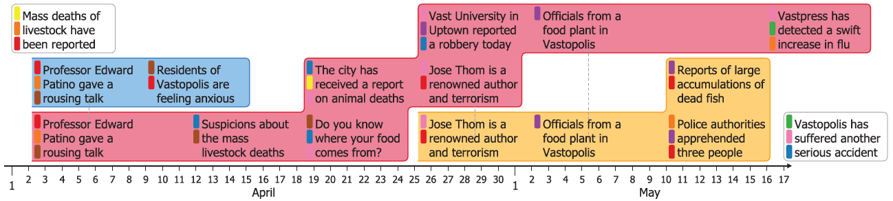

SchemaLine: Timeline Visualization for Sensemaking

Project Description
Timeline visualization is an important tool for sense making. It allows analysts to examine information in chronological order and to identify temporal patterns and relationships. However, many existing timeline visualization methods are not designed for the dynamic and iterative nature of the sense making process and the various analysis activities it involves. In this paper, we introduce a novel timeline visualization, Schema Line, to address these deficiencies. Schema Line is designed to group notes into analyst-determined schema, using a layout algorithm to produce compact but aesthetically pleasing timeline visualization, and includes fluid user interactions to support sense making activities. It enables interactive temporal schemata construction with seamless integration with visual data exploration and note taking. Our preliminary evaluation results show that the participants found the new method easy to learn and use, and its features effective for the sense making activities for which it was designed.
Papers
- P. H. Nguyen, K. Xu, R. Walker, and B. L. William Wong. SchemaLine: Timeline Visualization for Sensemaking. International Conference on Information Visualisation, pp. 225-233, July 2014